Chapter 08 · 细胞与基本组织
血细胞发生
Hematopoiesis · 12 小节 · 18 张切片 · 12 张电镜 · 本地概览 19 张
本章导语
本章讨论血细胞从哪里来、怎样成熟。前一章已经认识血液中各类细胞的形态，这里把视线转向红骨髓：先看造血组织与血窦怎样构筑成造血微环境，再在涂片上按细胞系列纵向辨认从原细胞到成熟细胞的形态演变，最后落实浆细胞与破骨细胞两个易混细胞。学习时抓住胞体大小、核形、染色质、核仁、胞质染色与颗粒六条线索，逐系比较，比单记名称更有效。
复习重点
- 红骨髓由造血组织与血窦构成，理解造血微环境的组成与作用。
- 掌握红细胞发生各阶段核与胞质的演变规律以及脱核过程。
- 掌握粒细胞特殊颗粒出现的时间与核形变化顺序。
- 能在涂片上区分浆细胞、破骨细胞与单核细胞。
- 理解血小板由巨核细胞胞质分块脱落形成。
易混淆对比
- 中幼红细胞 vs 晚幼红细胞：看核染色质块状程度与胞质由灰蓝转红染的变化
- 单核细胞 vs 大淋巴细胞：看核凹陷程度、胞质多少与嗜碱性强弱
- 破骨细胞 vs 巨核细胞：破骨细胞核各自独立且贴附骨小梁，巨核细胞核分叶
阅读提示：本页中文要点为自编复习笔记，不是原站正文的翻译；标本图像为经作者书面许可保存的中分辨率概览，每张卡片保留 © 署名与原页面链接，“原站本章/原站切片”可查看高倍与结构标注。本站为 Histology Guide 的非官方中文学习改编版，未经其认可或背书。
骨髓
BONE MARROW
- 红骨髓由造血组织与血窦构成，网状纤维和基质细胞共同形成造血微环境。
- 造血索内可见各发育阶段的血细胞，成熟后穿过血窦壁进入血流。
- 血窦内皮细胞有窗孔、基膜不完整，有利于血细胞穿行。
- 巨噬细胞分布于造血索内，参与吞噬清除与铁代谢。
低倍镜低倍镜下先区分造血组织与血窦，看两者比例与分布
高倍镜高倍镜下确认血窦内皮、巨噬细胞和各阶段造血细胞
易混提示：造血索与血窦在低倍下都呈网状，容易把充盈血液的血窦误认作造血索。
相关标本 · 1
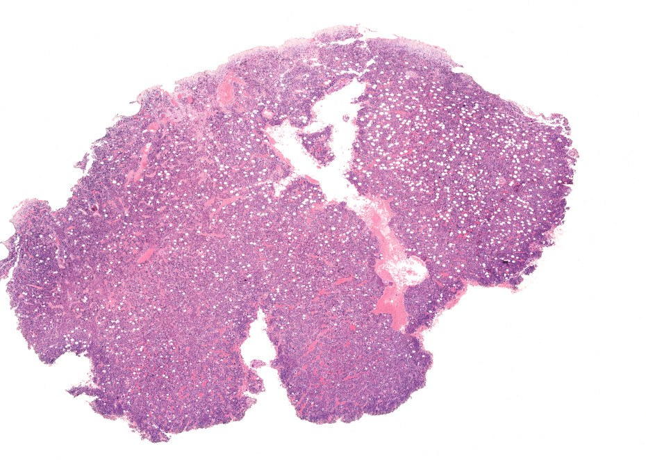
点击图片放大 · 本地概览
MHS 304 Red Bone Marrow
红骨髓（切片）
H&E
本地概览
930×662
图像 © Histology Guide 及/或原始贡献者 · 非商业教育用途，经许可保存；原页面链接见下方
骨髓涂片
Bone Marrow Smear
- 涂片经 Wright 染色，可显示各系细胞核与胞质的染色差异。
- 涂片边缘细胞分散、铺展良好，最适合观察单个细胞的细节。
- 同一张涂片内各发育阶段细胞并存，须按系列纵向比较。
- 骨髓涂片比外周血涂片细胞更密集，幼细胞比例明显增高。
低倍镜低倍镜下先选细胞分布均匀、彼此不重叠的区域
高倍镜高倍或油镜下按核形与胞质颜色逐个判读细胞系列
易混提示：涂片厚薄不均处细胞收缩变形、染色偏深，不宜据此判断阶段。
相关标本 · 1
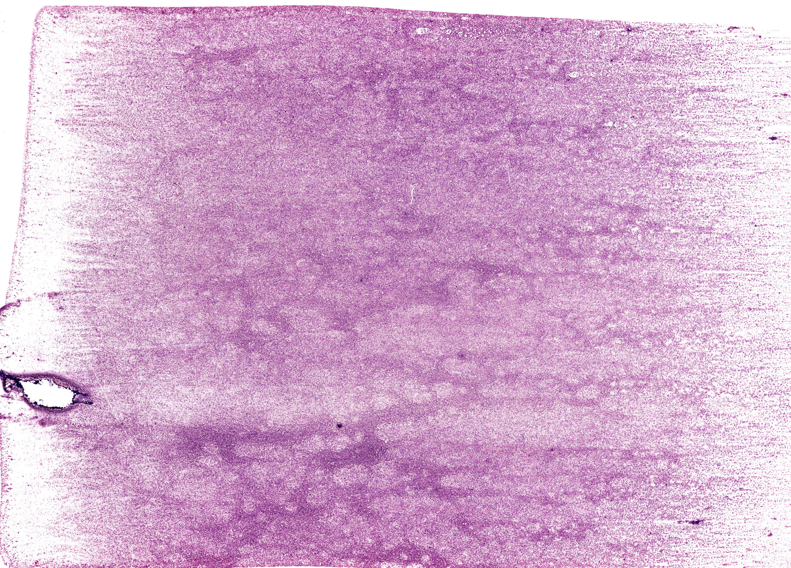
点击图片放大 · 本地概览
MH 034a Bone Marrow Smear
骨髓涂片（Wright 染色）
Wright's Stain
本地概览
3638×2613
图像 © Histology Guide 及/或原始贡献者 · 非商业教育用途，经许可保存；原页面链接见下方
血细胞发生
HEMATOPOIESIS
- 造血干细胞先分化为定向祖细胞，再经过形态可辨的前体细胞逐步成熟。
- 各系成熟遵循共同规律：胞体由大变小，核由大变小直至消失或分叶。
- 胞质由嗜碱转为嗜酸，或出现特异性颗粒，是判断系列与阶段的关键。
- 造血受基质细胞、细胞因子与神经内分泌因素共同调节。
低倍镜低倍镜下先找出各系细胞相对集聚成团的区域
高倍镜高倍镜下按核染色质、核仁和胞质颗粒判断发育阶段
易混提示：不同系列的同一阶段细胞形态相近，须结合颗粒性质与核形综合判断。
红细胞发生
Erythrocytes
- 红系经历原红细胞、早幼红细胞、中幼红细胞、晚幼红细胞、网织红细胞到成熟红细胞。
- 胞体逐渐变小，核染色质由细密变为粗块，最后脱核。
- 胞质因血红蛋白增多，由深蓝转为灰蓝，再转为红染。
- 网织红细胞仍含少量核糖体，是尚未完全成熟的释放细胞。
低倍镜低倍镜下寻找胞质深染、核圆而染色质致密的成团细胞
高倍镜高倍镜下比较核染色质粗细与胞质染色判断幼红细胞阶段
易混提示：中幼红细胞与晚幼红细胞核都小而圆，区别在染色质块状程度和胞质色调。
相关标本 · 1
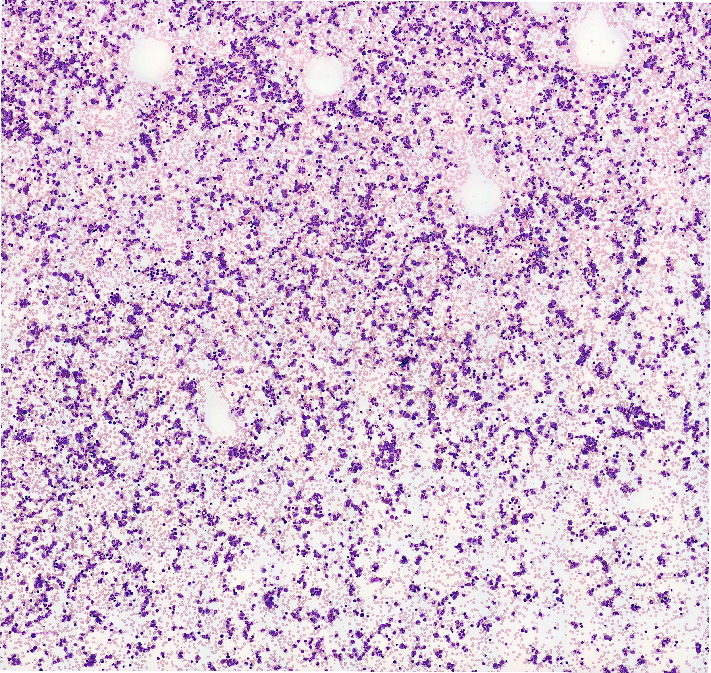
点击图片放大 · 本地概览
MH 034bhr Red Blood Cell Development
红系细胞发育（涂片）
Wright's Stain
本地概览
4635×4387
图像 © Histology Guide 及/或原始贡献者 · 非商业教育用途，经许可保存；原页面链接见下方
粒细胞发生
Granulocytes
- 粒系经历原粒细胞、早幼粒细胞、中幼粒细胞、晚幼粒细胞、杆状核到分叶核细胞。
- 特殊颗粒在中幼粒细胞阶段开始出现，是区分阶段的重要标志。
- 核由圆形逐渐凹陷成杆状再分叶，判读阶段时最为可靠。
- 中性、嗜酸、嗜碱三系颗粒染色性质不同，须在油镜下确认。
低倍镜低倍镜下先按胞体大小把粒系细胞与红系细胞区分开
高倍镜油镜下观察特殊颗粒的颜色与核形，确认粒系阶段
易混提示：嗜碱性粒细胞颗粒粗大且遮盖细胞核，低倍下易被误认为核固缩的细胞。
相关标本 · 3
MH 034bhr Neutrophil Development
中性粒细胞发育（涂片）
Wright's Stain
本地概览
4635×4387
图像 © Histology Guide 及/或原始贡献者 · 非商业教育用途，经许可保存；原页面链接见下方
MH 034bhr Eosinophil Development
嗜酸性粒细胞发育（涂片）
Wright's Stain
本地概览
4635×4387
图像 © Histology Guide 及/或原始贡献者 · 非商业教育用途，经许可保存；原页面链接见下方
MH 034bhr Basophil Development
嗜碱性粒细胞发育（涂片）
Wright's Stain
本地概览
4635×4387
图像 © Histology Guide 及/或原始贡献者 · 非商业教育用途，经许可保存；原页面链接见下方
无粒细胞发生
Agranulocytes
- 无粒细胞包括淋巴细胞与单核细胞，胞质内均无特殊颗粒。
- 淋巴细胞在骨髓与胸腺内分化，单核细胞主要在骨髓生成。
- 两类细胞核形差别明显：淋巴细胞核圆而深染，单核细胞核呈肾形或马蹄形。
- 无粒细胞成熟后进入血液，再迁移至淋巴器官或结缔组织。
低倍镜低倍镜下寻找胞质少、核占比例大的单核样细胞
高倍镜高倍镜下观察核凹陷程度与胞质多少区分淋巴细胞和单核细胞
易混提示：大淋巴细胞与单核细胞体积相近，须看核凹陷程度和胞质嗜碱性强弱。
相关标本 · 2
MH 034bhr Lymphocytes
淋巴细胞（骨髓涂片）
Wright's Stain
本地概览
4635×4387
图像 © Histology Guide 及/或原始贡献者 · 非商业教育用途，经许可保存；原页面链接见下方
MH 034bhr Monocytes
单核细胞（骨髓涂片）
Wright's Stain
本地概览
4635×4387
图像 © Histology Guide 及/或原始贡献者 · 非商业教育用途，经许可保存；原页面链接见下方
血小板发生
Platelets
- 巨核细胞由原巨核细胞发育而来，胞体大，核为多倍体并分叶。
- 巨核细胞胞质分块脱落，形成血小板并进入血窦。
- 血小板无核，呈紫红色小体，含颗粒，参与止血与凝血。
- 巨核细胞数量少但体积大，涂片低倍镜下即可发现。
低倍镜低倍镜下寻找体积远大于周围细胞、核分叶的巨核细胞
高倍镜高倍镜下观察巨核细胞胞质颗粒并辨认游离的血小板
易混提示：涂片中的血小板常聚集成小堆，不要误认为细胞碎片或染色沉渣。
相关标本 · 1

点击图片放大 · 本地概览
MH 034a-MH 034bhr Megakaryocytes and Platelet Formation
巨核细胞与血小板形成
Wright's Stain
本地概览
3638×2613
图像 © Histology Guide 及/或原始贡献者 · 非商业教育用途，经许可保存；原页面链接见下方
复习提纲
REVIEW
- 按红系、粒系、无粒系、血小板四条主线回顾各阶段的形态标志。
- 用表格比较胞体大小、核形、染色质与胞质染色，便于横向对照。
- 把涂片观察与骨髓切片结构对照，理解造血微环境的支持作用。
低倍镜低倍镜下快速浏览整张涂片，确认各系细胞均有代表
高倍镜高倍镜下抽查各阶段细胞，检验阶段判断是否稳定
易混提示：只记细胞名称而忽视形态依据，遇到相邻阶段时容易混淆。
相关标本 · 1
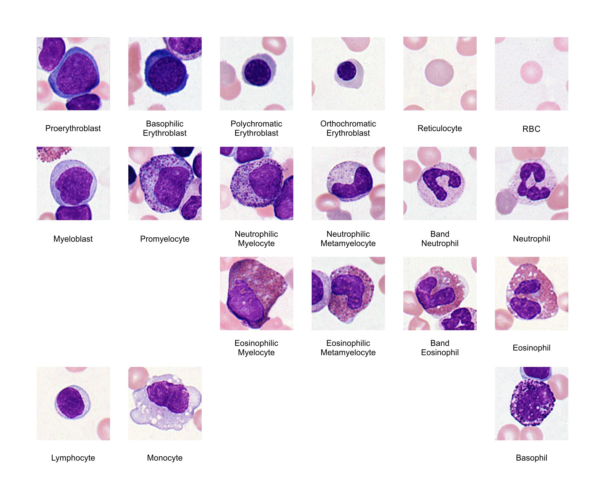
点击图片放大 · 本地概览
MH 034bhr Bone Marrow Smear
骨髓涂片（复习用）
Wright's Stain
本地概览
2475×2040
图像 © Histology Guide 及/或原始贡献者 · 非商业教育用途，经许可保存；原页面链接见下方
自测要点
QUIZ
- 自测重点是比较同一系列相邻阶段细胞之间的形态差异。
- 答题时先确定细胞系列，再判断发育阶段，最后核对染色特征。
- 错题应回到对应切片或涂片位置重新观察，而不是只记答案。
低倍镜低倍镜下先确定题目所指细胞所在的区域和背景结构
高倍镜高倍镜下逐一核对核形、颗粒和胞质染色后作答
易混提示：凭印象作答而不回看切片，容易把嗜酸性与嗜碱性颗粒弄反。
相关标本 · 1
Bone Marrow Review
骨髓复习涂片
Wright's Stain
本地概览
4635×4387
图像 © Histology Guide 及/或原始贡献者 · 非商业教育用途，经许可保存；原页面链接见下方
浆细胞
PLASMA CELL
- 浆细胞核偏位，染色质呈车轮状或钟面状排列。
- 胞质嗜碱性强，核旁有浅染区，为发达的高尔基复合体。
- 浆细胞由 B 细胞受抗原刺激后分化而来，分泌抗体。
- 浆细胞在骨髓与淋巴组织中均可见，形态稳定易于辨认。
低倍镜低倍镜下寻找核偏位、胞质深染的卵圆形细胞
高倍镜油镜下确认核旁浅染区与车轮状染色质
易混提示：核旁浅染区容易被误认作脂滴空泡，需与脂肪细胞区别。
相关标本 · 1
MH 034bhr Plasma Cells
浆细胞（骨髓涂片）
Wright's Stain
本地概览
4635×4387
图像 © Histology Guide 及/或原始贡献者 · 非商业教育用途，经许可保存；原页面链接见下方
破骨细胞
OSTEOCLAST
- 破骨细胞体积大，含多个卵圆形核，胞质嗜酸性。
- 常贴附于骨小梁表面，位于吸收陷窝内，游离面有皱褶缘。
- 破骨细胞由单核细胞融合形成，与成骨细胞共同参与骨改建。
- 核多而各自独立，与分叶核的巨核细胞不同。
低倍镜低倍镜下沿骨小梁边缘寻找体积大、多核的嗜酸性细胞
高倍镜高倍镜下数核并观察皱褶缘与吸收陷窝
易混提示：破骨细胞多核且贴骨分布，易与融合的巨噬细胞混淆。
相关标本 · 1
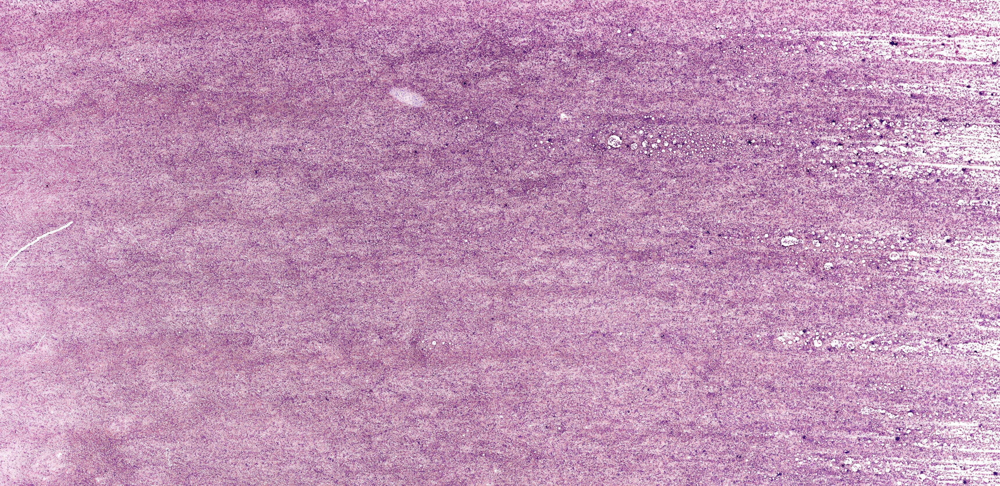
点击图片放大 · 本地概览
MH 034f Osteoclasts
破骨细胞（骨髓涂片）
Wright's Stain
本地概览
3441×1674
图像 © Histology Guide 及/或原始贡献者 · 非商业教育用途，经许可保存；原页面链接见下方
补充标本
ADDITIONAL EXAMPLES
- 补充涂片用于在更多视野中重复练习同一套判断标准。
- 不同涂片的染色深浅有差异，判读时以核质对比关系为准。
- 遇到不典型细胞时，先归系列再定阶段，不要急于命名。
低倍镜低倍镜下先熟悉本张涂片的染色深浅与细胞分布
高倍镜高倍镜下重复辨认各系代表细胞，与主涂片比较差异
易混提示：换片后仍沿用上一张的染色印象，容易高估或低估细胞成熟度。
相关标本 · 5
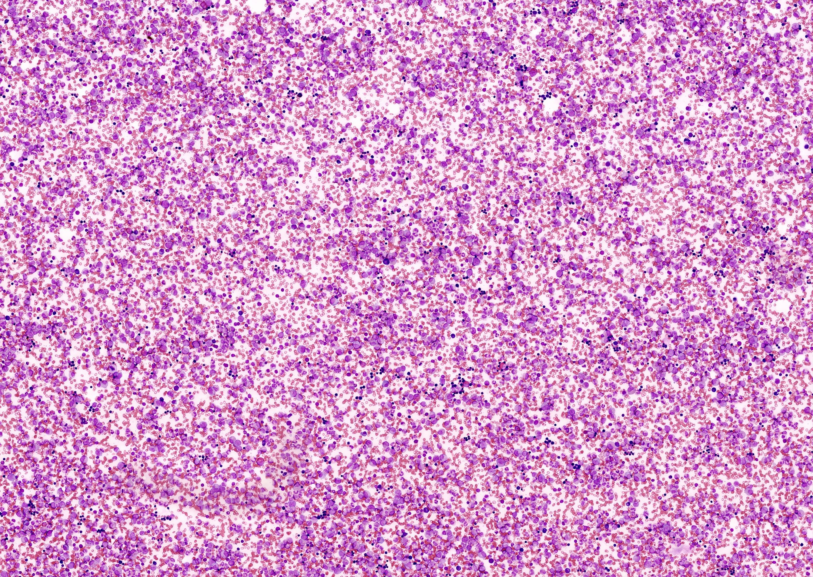
点击图片放大 · 本地概览
MH 034ahr Bone Marrow Smear
骨髓涂片（示例一）
Wright's Stain
本地概览
2682×1905
图像 © Histology Guide 及/或原始贡献者 · 非商业教育用途，经许可保存；原页面链接见下方
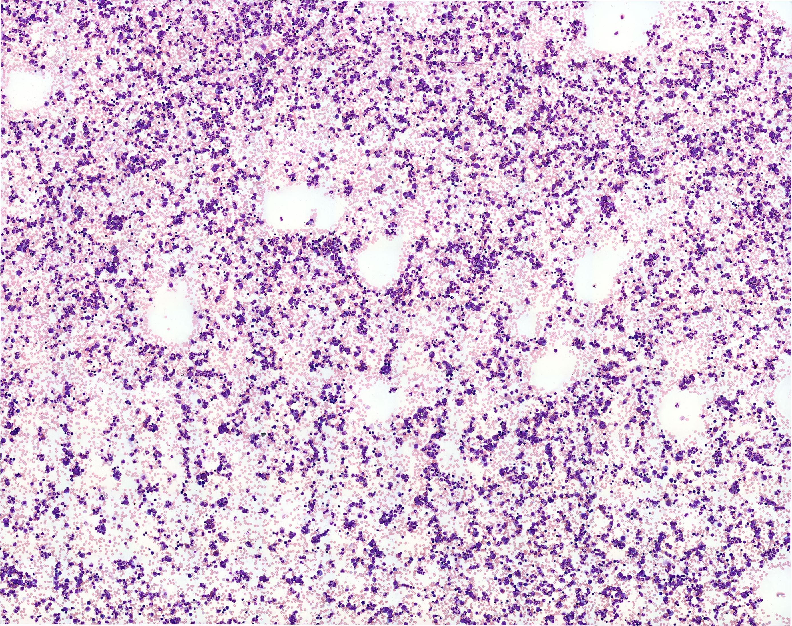
点击图片放大 · 本地概览
MH 034chr Bone Marrow Smear
骨髓涂片（示例二）
Wright's Stain
本地概览
2773×2191
图像 © Histology Guide 及/或原始贡献者 · 非商业教育用途，经许可保存；原页面链接见下方
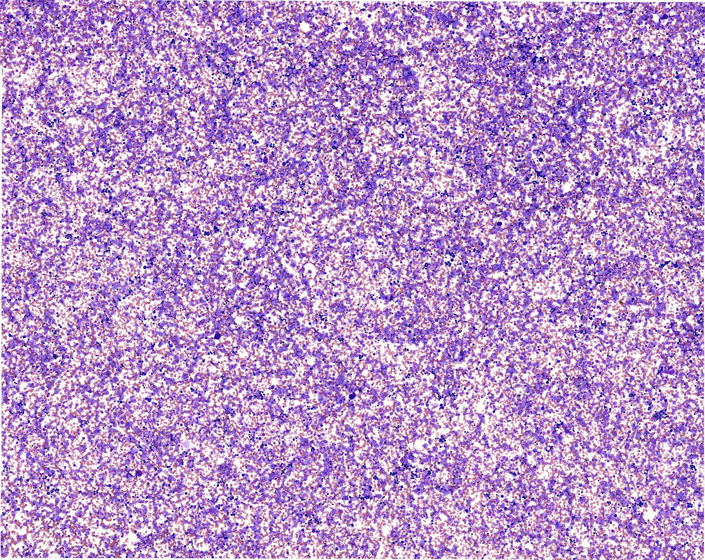
点击图片放大 · 本地概览
MH 034dhr Bone Marrow Smear
骨髓涂片（示例三）
Wright's Stain
本地概览
2772×2201
图像 © Histology Guide 及/或原始贡献者 · 非商业教育用途，经许可保存；原页面链接见下方
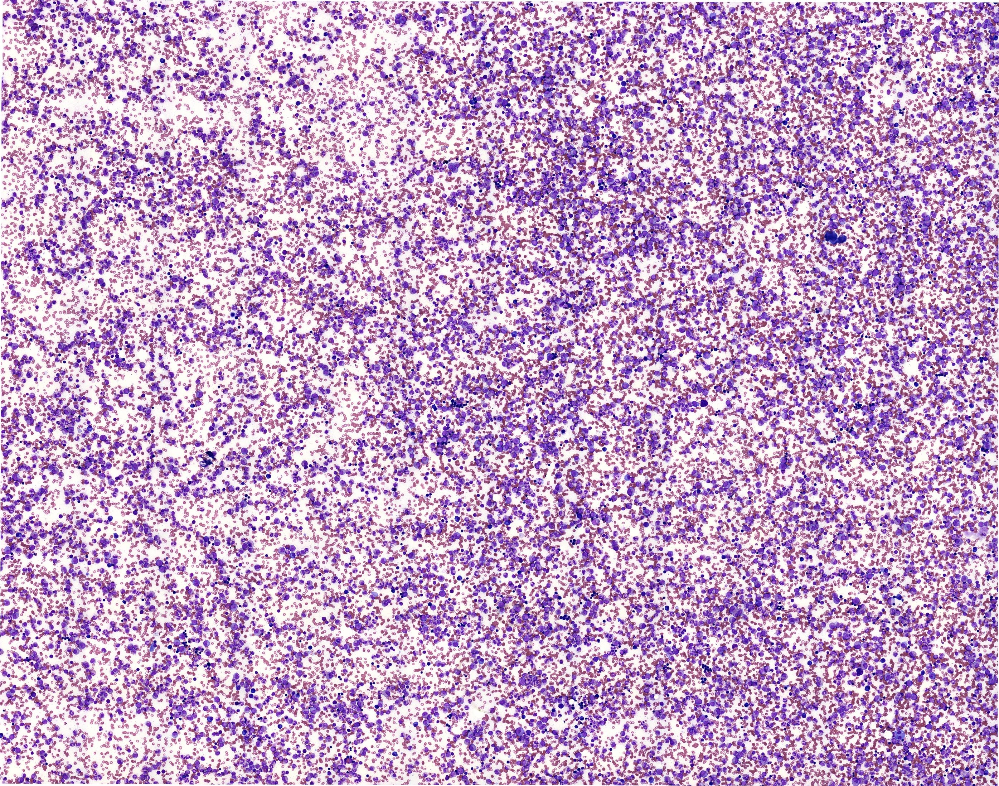
点击图片放大 · 本地概览
MH 034ehr Bone Marrow Smear
骨髓涂片（示例四）
Wright's Stain
本地概览
2791×2195
图像 © Histology Guide 及/或原始贡献者 · 非商业教育用途，经许可保存；原页面链接见下方
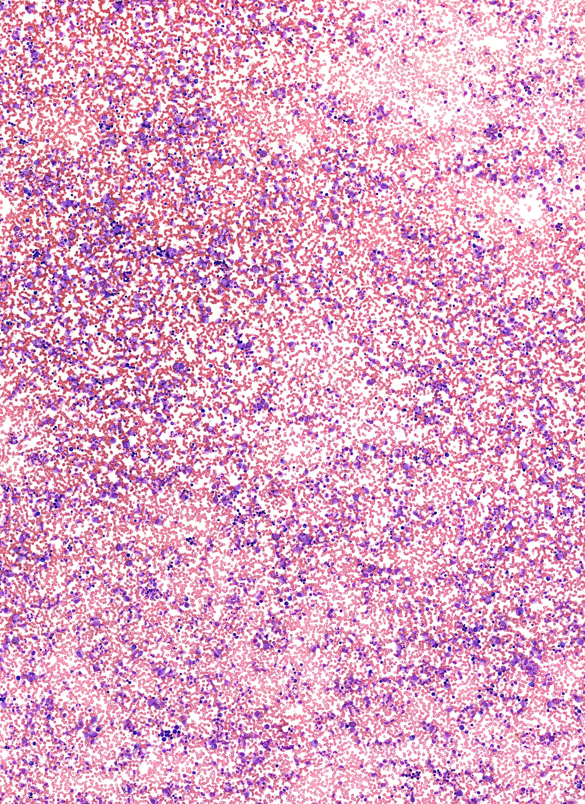
点击图片放大 · 本地概览
MH 034fhr Bone Marrow Smear
骨髓涂片（示例五）
Wright's Stain
本地概览
3381×4639
图像 © Histology Guide 及/或原始贡献者 · 非商业教育用途，经许可保存；原页面链接见下方
本章其他图谱
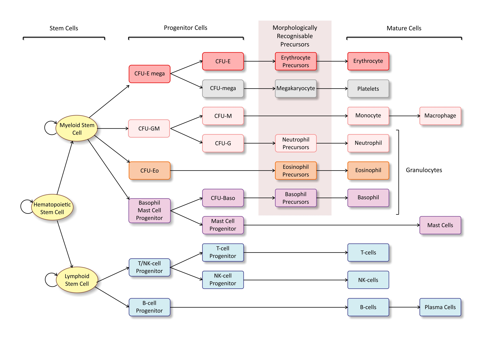
点击图片放大 · 本地概览
Fig 027 Hematopoiesis
（中文名待编写）
本地概览
4096×2843
图像 © Histology Guide 及/或原始贡献者 · 非商业教育用途，经许可保存；原页面链接见下方
本章电镜照片
12 张 · 需在线查看
电镜照片 12 张（在线查看）
自测
8 题 · 自编
先自己回答，再点“显示答案”。标记为易错的项目会进入复习模式。
红骨髓中血窦壁的哪些结构特点有利于血细胞进入血流？
概念
内皮细胞有窗孔、基膜不完整，便于成熟血细胞穿行
红细胞脱核发生在哪个阶段之后？
概念
晚幼红细胞脱核后成为网织红细胞
粒细胞特殊颗粒最早出现在哪个发育阶段？
概念
中幼粒细胞阶段开始出现特殊颗粒
涂片上核偏位、胞质嗜碱且核旁有浅染区的是哪种细胞？
识别
浆细胞
破骨细胞在骨组织切片中通常位于何处？
识别
贴附于骨小梁表面的吸收陷窝内
中性粒细胞核呈杆状时属于哪个发育阶段？
概念
晚幼粒细胞之后、分叶之前的杆状核阶段
网织红细胞与成熟红细胞的主要差别是什么？
对比
网织红细胞仍残留少量核糖体，可被煌焦油蓝染成网织状
骨髓涂片与骨髓切片的观察重点有何不同？
对比
涂片看单个细胞的形态与系列，切片看造血组织与血窦构筑